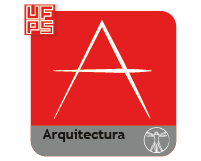
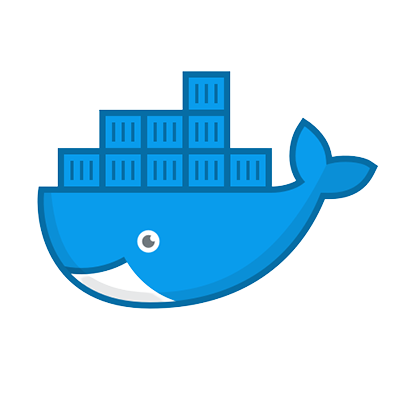

<!-- NAv ba anterior-->

<nav class="navbar navbar-expand-lg fixed-top navbar-transparent" color-on-scroll="100" id="navbar-top">
    <div class="container">
        <div class="navbar-translate">
            <a class="navbar-brand" placement="bottom" [routerLink]="['/home']" target="_blank">
                <span> • ArchITecture • </span>
                

            </a>
            <button aria-controls="navigation-index" aria-label="Toggle navigation" class="navbar-toggler navbar-toggler" [attr.aria-expanded]="!isCollapsed" (click)="isCollapsed = !isCollapsed" id="navigation" type="button">
        <span class="navbar-toggler-bar bar1"> </span>
        <span class="navbar-toggler-bar bar2"> </span>
        <span class="navbar-toggler-bar bar3"> </span>
      </button>
        </div>
        <div class="navbar-collapse justify-content-end" [collapse]="isCollapsed" id="navigation">
            <div class="navbar-collapse-header">
                <div class="row">
                    <div class="col-6 collapse-brand"><a> •ArchITecture• </a></div>
                    <div class="col-6 collapse-close text-right">
                        <button aria-controls="navigation-index" aria-label="Toggle navigation" class="navbar-toggler" [attr.aria-expanded]="!isCollapsed" (click)="isCollapsed = !isCollapsed" id="navigation" type="button">
              <i class="tim-icons icon-simple-remove"> </i>
            </button>
                    </div>
                </div>
            </div>
            <ul class="navbar-nav">

                <li class="nav-item p-0">
                    <a class="nav-link" href="https://github.com/AVBLANCO/TesisArquitecturaEMVM" placement="bottom" target="_blank" tooltip="Repositorio codigo">
                        <i class="fab fa-github"> </i>
                        <p class="d-lg-none d-xl-none">Git Hub</p>
                    </a>
                </li>
                <li class="nav-item p-0">
                    <a class="nav-link" href="https://hub.docker.com/" placement="bottom" target="_blank">
                        <i class="fab fa-docker"> </i>
                        <p class="d-lg-none d-xl-none">Docker</p>
                    </a>
                </li>
                <!--men en la parte izquierda-->
                <li class="dropdown nav-item" dropdown>
                    <a class="dropdown-toggle nav-link dropdown-toggle" data-toggle="dropdown" dropdownToggle href="javascript:void(0)">
                        <i class="fa fa-cogs d-lg-none d-xl-none"> </i> Principal
                    </a>
                    <div class="dropdown-menu dropdown-with-icons" *dropdownMenu>
                        <a class="dropdown-item" [routerLink]="['/landing']">
                            <i class="tim-icons icon-book-bookmark"> </i> Mapas
                        </a>

                        <a class="dropdown-item" [routerLink]="['/profile']">

                            <i class="tim-icons icon-app"> </i> Architecture
                        </a>
                        <a class="dropdown-item" [routerLink]="['/register']">
                            <i class="tim-icons icon-video-66"> </i> Yolo
                        </a>
                    </div>
                </li>

            </ul>
        </div>
    </div>
</nav>
<!-- <app-navbar></app-navbar> -->

<div class="wrapper" style="background-color: #707070 !important;">
    <div class="page-header header-filter">
        <div class="squares square1"></div>
        <div class="squares square2"></div>
        <div class="squares square3"></div>
        <div class="squares square4"></div>
        <div class="squares square5"></div>
        <div class="squares square6"></div>
        <div class="squares square7"></div>
        <div class="container">
            <div class="content-center">
                <br>
                <br>
                <br>
                <br>
                <h1 class="h1-seo">•ArchITecture•</h1>
                <h3>
                    ESTRATEGIA DE MONITOREO DE VARIABLES DE MOVILIDAD EN EL BARRIO SAN MARTÍN MEDIANTE EL APOYO DE TIC EN LA CIUDAD DE CÚCUTA
                </h3>
                <!-- <h3>
                    es una iniciativa de profesores y estudiantes de la UFPS de los programas de Arquitectura e Ingeniería de Sistemas para lideras la transformación digital de la región desde la Arquitectura y aprovechando las TIC (Tecnologías de Información y Comunicación
                    en inglés IT Information Technology)
                </h3> -->
            </div>
        </div>
    </div>
    <div class="main" style="background-color: #707070 !important;">

        <div class="section section-basic" id="basic-elements" style="background-color: #707070 !important;">
            

            <div class="container" style="background-color: #707070 !important;">

            </div>

            <!--Footer-->
            <div class="footer-top">
                <div class="container">

                    <div class="row">

                        <div class="col-lg-6">

                            <div class="row">

                                <div class="col-sm-6">

                                    <div class="footer-newsletter">
                                        <h3>•ArchITecture•</h3>
                                        <p style="text-align: justify;">ArchITecture es una iniciativa de profesores y estudiantes de la UFPS de los programas de Arquitectura e Ingeniería de Sistemas para lideras la transformación digital de la región desde la Arquitectura y aprovechando
                                            las TIC (Tecnologías de Información y Comunicación en inglés IT Information Technology)</p>
                                        <br>

                                    </div>
                                    <br>

                                    <!-- <div class="footer-newsletter">
                                        <h4>INSTITUCIÓN</h4>
                                        <p style="text-align: justify;">RISKO nace bajo un proyecto del grupo de investigación GIDIS (Grupo de Investigación y Desarrollo de Ingeneria del Sofware) pertenenciente a la Universidad Francisco de Paula Santander en Cúcuta, Colombia.</p>

                                    </div> -->
                                    <!-- <a href="https://studentsprojects.cloud.ufps.edu.co">
                                        </a> &nbsp;
                                    <br> -->
                                    <a href="https://ww2.ufps.edu.co/">
                                        </a>
                                    <br>
                                    <a href="https://https://ww2.ufps.edu.co/oferta-academica/arquitectura/170/">
                                        </a>

                                </div>

                                <div class="col-sm-6">
                                    <!-- <div class="footer-links">
                                        <h4>LINKS DE INTERÉS</h4>
                                        <ul>
                                            <li><a href="#intro">Inicio</a></li>
                                            <li><a href="/risko/manual/">Manual de usuario</a></li>
                                            <li><a href="/risko/registrargerente/">Registrese</a></li>
                                            <li><a href="/risko/accounts/login/">Iniciar sesión</a></li>
                                        </ul>
                                    </div> -->

                                    <div class="footer-links">
                                        <h4>CONTACTENOS</h4>
                                        <p style="text-align: justify;">
                                            Programa de Ingeniería de Sistemas de la Universidad Francisco de Paula Santander.<br> Avenida Gran Colombia No. 12E-96 Barrio Colsag, Cúcuta, Colombia. <br>
                                            <strong>Telefono:</strong> +(57) 7 5776655 Extensiones 201 y 203<br>
                                            <strong>Correo:</strong> architectureufps@gmail.com<br>
                                        </p>
                                    </div>

                                    <div class="social-links">
                                        <label data-toggle="tooltip" data-placement="top" title="" data-original-title="Repositorio GitHub.">
                                <a href="https://github.com/AVBLANCO/TesisArquitecturaEMVM.git" target="_blank" rel="noopener noreferrer" class="github">
                                    
                                </a>
                              </label>
                                        <!-- <br> -->
                                        <label data-toggle="tooltip" data-placement="top" title="" data-original-title="Repositorio DockerHub.">
                                <a href="https://hub.docker.com/" target="_blank" rel="noopener noreferrer">
                                  
                                </a> 
                              </label>


                                    </div>

                                </div>

                            </div>

                        </div>

                        <div class="col-lg-6">

                            <div class="form">

                                <h4>Dejanos un comentario</h4>
                                <p style="text-align: justify;">Al dejarnos un comentario realizas un gran aporte y nos ayudas a mejorar cada día.</p>
                                <form method="post" role="form" action="/risko/">
                                    <input type="hidden" name="csrfmiddlewaretoken" value="4t3dPNYt8cLIQlGo86FwTUmhkB53MzdnGkKBkoA5Ajs5zdyJkShdDoYbVjj4KCUa">
                                    <div class="form-group">
                                        <input type="text" name="name" class="form-control" id="name" maxlength="80" placeholder="Nombre" data-rule="minlen:4" required="">

                                    </div>
                                    <div class="form-group">
                                        <input type="email" class="form-control" name="email" id="email" maxlength="80" placeholder="Correo Electronico" data-rule="email" required="">

                                    </div>
                                    <div class="form-group">
                                        <textarea class="form-control" name="message" rows="5" maxlength="80" data-rule="required" required="" placeholder="Mensaje"></textarea>

                                    </div>

                                    <div class="text-center"><button type="submit" title="Send Message">Enviar Comentario</button></div>
                                </form>
                            </div>

                        </div>


                    </div>

                </div>
            </div>
            <!--Footer-->
        </div>